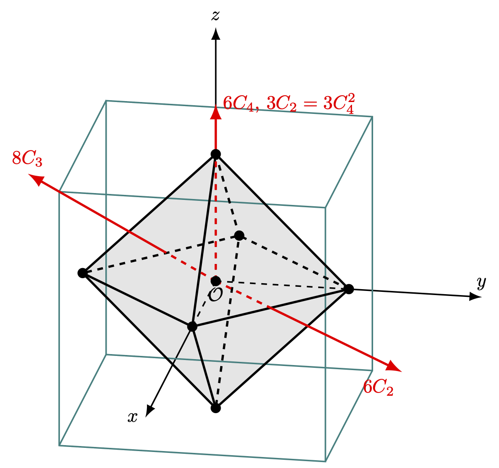

8 군과 양자역학 I- 기약표현과 분광학
% %
%\[ \DeclarePairedDelimiters{\set}{\{}{\}} \DeclareMathOperator*{\argmax}{argmax} \]
8.1 격자 대칭군의 기약표현
8.1.1 점군의 기약표현과 표준적인 character table
\(D_3\) 에 대한 표현을 다시 보고 표준적인 character table 작성법을 다시 정리해보자.
- 1차원 기약표현의 레이블은 \(A,\,B\) 를 사용한다. 주축 회전에 대한 character 가 \(+1\) 일 경우는 \(A\), \(-1\) 일 경우는 \(B\) 를 사용한다. 2차원 기약표현의 레이블은 \(E\), 3차원 기약표현의 레이블은 \(T\) 를 사용한다. \(A\) 타입 기약표현이 여러개 있을 경우 \(A_1\) 은 trivial representation 이다. 단 하나 있을 경우는 \(A\) 가 trivial representation 이다.
- 동일한 차원의 기약표현이 여러개일 경우 \(1,\,2\) 와 같은 아래첨자 인덱스가 붙는다. 혹은 \({}',\, {}''\) 와 같은 기호로 구분하기도 한다. 반전대칭이 존재할경우 대칭의 even/odd 에 따라 \(g,\,u\) 아래첨자가 붙는다. (gerade, ungreade)
- 다른 열에는 각 기약표현이 어떻게 변환하는지를 보이기 위해 좌표, 좌표의 2차식, \(R_x,\,R_y,\,R_z\) 와 좌표축에 대한 회전을 넣는다. Character Table 과 기저 함수 - \(D_3\) 의 경우 를 참고하라.
예제 8.1 (\(C_{2v}\) Character table) \(C_{2v}\) 는 4개의 원소로 구성된 군이며 \(\sigma_v,\, \sigma'_{v}\) 는 각각 \(xz\), \(yz\) 평면에 대한 거울상 반사이다. 각각이 아벨군이므로 1차원 기약표현만이 존재한다. 주축을 \(z\) 축으로 삼으며 character 에 대한 직교정리를 사용하여 정리하면 아래 표와 같다. 여기서는 앞의 규칙 대로 \(A\) 형 기약표현 2개와 \(B\) 형 기약표현 2개만 존재하며 각각 아래와 같이 레이블울 붙였다. 아직 좌표에 대한 대칭은 정해지지 않았다.
좌표에 대한 변환은 다음과 같다.
\[ \hat{E}\begin{bmatrix} x \\ y \\ z\end{bmatrix} = \begin{bmatrix} x \\ y \\ z\end{bmatrix}, \quad \hat{C}_2\begin{bmatrix} x \\ y \\ z\end{bmatrix} = \begin{bmatrix} -x \\ -y \\ z\end{bmatrix},\quad \hat{\sigma}_v\begin{bmatrix} x \\ y \\ z\end{bmatrix} = \begin{bmatrix} x \\ -y \\ z\end{bmatrix}, \quad \hat{\sigma}'_v\begin{bmatrix} x \\ y \\ z\end{bmatrix} = \begin{bmatrix} -x \\ y \\ z\end{bmatrix} \]
- \(x\) 는 \(B_1\), \(y\) 는 \(B_2\), \(z\) 는 \(A_1\) 과 같은 형태로 변환한다는 것을 안다. 따라서 \(xy\) 는 \(A_2\), \(xz\) 는 \(B_1\), \(yz\) 는 \(B_2\) 와 같이 변환한다.
- \(x^2,\,y^2,\,z^2\) 은 모두 \(A_1\) 과 같이 변환한다.
- \(R_z = xp_y-yp_x\) 는 \(A_2\) 와 같이 변화한다. \(R_x,\,R_y\) 에 대해서도 각각 \(B_2,\,B_1\) 과 같이 변환된다는 것을 확인 할 수 있다.
8.1.2 3차원 회전군의 기약표현
자유 원자는 완전한 회전 대칭성을 가지며, 해밀토니안과 교환 가능한 대칭 연산의 수는 무한하다. 즉, 임의의 축에 대한 모든 각도로의 회전은 전체 회전 군의 대칭 연산이다. 여기서는 무한하거나 연속적인 군에 대해 자세히 논의하지는 않을 것이지만, 양자역학에서 자주 사용하는 결과들을 엄밀한 증명 없이 받아들일 것이다.
명제 8.1 3차원에서의 회전군에 대해 정해진 각 \(\alpha\) 만큼 회전시키는 모든 연산은 같은 클래스에 속한다.
(증명). Accept without proof
여기서 사용할 구면조화 함수(Spherical harmonic function) \(Y_l^m( \theta,\, \varphi)\) 는 르장드르 연관 함수(associated Legendre function) \(P_l^m\) 과 음이 아닌 정수 \(l\) 그리고 \(|m|\le l\) 인 정수 \(m\) 에 대해 아래와 같이 정의된다. (구면조화함수에 대해 자세한 것은 Arfken et al. (2013) 을 참고하라.)
\[ Y_l^m (\theta,\, \varphi) = \sqrt{\dfrac{2l+1}{4\pi}\dfrac{(l-|m|)!}{(l+|m|)!}} P_l^m(\cos\theta) e^{im\varphi}. \tag{8.1}\]
즉 정해진 \(l\) 값에 대해 \(m\) 값은 \(2l+1\) 가지가 될 수 있다.
명제 8.2 구면조화함수에서 \(\theta,\, \varphi\) 를 정하는 기준이 되는 축(이를 polar axis 라고 하며 보통 \(z\) 축으로 정한다.) 을 회전연산 \(R\) 을 통해 바꾸어 \(\theta',\, \varphi'\) 이 되었다고 하자. 이 때 다음이 성랍한다는 것이 알려져 있다.
\[ \hat{R}Y_l^m (\theta',\, \varphi') = \sum_{m'} D^{(l)} (R)_{m'm} Y_{l}^m (\theta,\, \varphi). \tag{8.2}\]
이 때 \(D^{l}(R)\) 은 회전 연산 \(R\) 에 대한 \(l\) 차원 표현이다. 즉 \(2l+1\) 개의 함수 \(\{Y_l^m\}\) 은 3차원 회전군의 \(2l+1\) 차원 표현의 기저가 된다.
(증명). Accept without proof
예제 8.2 (3차원 회전변환의 character) \(z\) 축으로 \(-\alpha\) 만큼의 회전 변환을 \(R_\alpha\) 라고 하자. 그렇다면
\[ \hat{R}_\alpha Y_l^m(\theta,\, \varphi) = Y_l^m(\theta,\, \varphi - \alpha) = e^{-im\alpha} Y_{l}^m (\theta,\, \varphi) \]
이며 이에대한 표현은 대각행렬로
\[ D^{(l)}(R_\alpha) = \begin{bmatrix} e^{-il\alpha} & 0 & \cdots & 0 \\ 0 & e^{-(l-1)\alpha} & \cdots & 0 \\ \vdots & \ddots & \cdots & \cdots \\ 0 & 0 & \cdots & e^{il\alpha}\end{bmatrix} \tag{8.3}\]
이며, character 는
\[ \chi^{(l)}(R_\alpha) = e^{-il\alpha}(1+e^{i\alpha} + \cdots + e^{2il\alpha}) = \dfrac{\sin (l+\frac{1}{2})\alpha}{\sin (\alpha/2)} \tag{8.4}\]
이다. 앞서 언급했듯이 임의의 각 \(\alpha\) 만큼의 모든 회전은 같은 클래스에 속하기 때문에 이 클래스의 character 는 식 8.4 와 같다.
예제 8.3 (inversion 의 character) 이제 반전 \(i\) 에 대한 charcter 를 알아보자. 구면조화함수의 성질에 의해
\[ \hat{i}Y_l^m(\theta,\, \varphi) = Y_l^m(\pi -\theta,\, \varphi+\pi) = (-1)^l Y_l^m(\theta,\, \varphi) \]
이다. 따라서, \(D^{l}(i)\) 도 대각행렬이며
\[ \chi^{(l)}(i) = \sum_{m=-l}^l (-1)^l = (-1)^l(2l+1) \tag{8.5}\]
이다.
정리 8.1 3차원에서의 회전군에 대해 식 8.3 의
(증명). 이외의 \(2l+1\) 차원 기약표현이 존재한다고 하자.
to be done
8.2 원자 에너지의 결정장 갈라짐
결정 내의 원자나 이온은 자유 상태일 때와는 다르게 등방적이지 않은 포텐셜의 영향을 받게 된다. 자유상태의 입자나 이온은 모든 3차원 회전군과 반전에 대해 대칭이지만 이 비등방 포텐셜의 영향으로 원래 군에 대한 유한 부분군에 대해서만 대칭이다. 이 때 3차원 회전군에서는 기약표현이었던 것이 이 유한 부분군의 표현에서는 이 기약성(irreducibility) 가 깨져버리며, 따라서 degeneracy 가 축소된다. 즉 에너지 레벨이 갈라지게 되며 이것을 결정장 갈라짐(Crystall field splitting) 이라고 한다. 순전히 결정장에 의한 에너지 갈라짐을 zero-field splitting 이라고 하며 외부 자기장 등을 가했을 때는 대칭이 더 깨지게 된다.

위의 그림과 같이 정육면체 내의 정팔면체의 각 꼭지점에 전하 \(q\) 를 띄는 같은 이온들이 위치한다고 하자. \(\mathcal{O}\) 에서 한 꼭지점까지의 거리가 \(a\) 일 때 중앙 \(\mathcal{O}\) 근처의 \(\boldsymbol{r} = (x,\,y,\,z)\) 에서 느끼는 전기포텐셜 \(V_C(\boldsymbol{r})\) 은 \(r/a \ll 1\) 조건에서 아래와 같이 근사된다.(연습문제 8.1)
\[ V_C(\boldsymbol{r})=\dfrac{35}{16 \pi \epsilon_0}\dfrac{q}{a^5}\left(x^4+y^4+z^4-\dfrac{3}{5}r^4\right). \tag{8.6}\]
위 식은 \(O\) 의 모든 대칭 연산에 대해 불변이며 cubic-field term 이라고 불린다. 우리는 원점 \(\mathcal{O}\) 근처의 전기장에 관심이 있고, 전기 포텐셜은 이 영역 바깥의 전하에 대한 포텐셜이므로 라플라스 방정식을 만족해야 한다. 3차원 라플라스 방정식 \(\nabla^2 \phi (\boldsymbol{r})\) 의 해는 \(r^l Y_l^m (\theta,\, \varphi)\) 의 선형결합이라는 것이 알려져 있다.
연습문제
연습문제 8.1 식 8.6 를 유도하라.
(해답). \(1/\sqrt{1-x},\, 1/\sqrt{1+x}\) 의 테일러 전개는 다음과 같다. \[ \begin{aligned} \dfrac{1}{\sqrt{1-x}} &= 1 + \dfrac{1}{2}x + \dfrac{3}{8}x^2 + \dfrac{5}{16}x^3 + \dfrac{35}{128}x^4 + \cdots \\[0.3em] \dfrac{1}{\sqrt{1+x}} &= 1 - \dfrac{1}{2}x + \dfrac{3}{4}x^2 - \dfrac{5}{16}x^3 + \dfrac{35}{128}x^4 + \cdots \end{aligned} \] \(r/a \ll 1\) 조건에서 테일러 전개하면
\[ \begin{aligned} \dfrac{1}{\sqrt{(x-a)^2+y^2+z^2}} &= \dfrac{1}{\sqrt{a^2 -2ax + r^2}} = \dfrac{1}{a} \dfrac{1}{\sqrt{1-(2x/a - r^2/a^2)}} \\[0.3em] &= \dfrac{1}{a} \left[1 + \dfrac{1}{2}\left(\dfrac{2x}{a} - \dfrac{r^2}{a^2}\right) + \dfrac{3}{8}\left(\dfrac{2x}{a} - \dfrac{r^2}{a^2}\right)^2 \right . \\[0.3em] &\qquad \left. + \dfrac{5}{16}\left(\dfrac{2x}{a} - \dfrac{r^2}{a^2}\right)^3 + \dfrac{35}{128}\left(\dfrac{2x}{a} - \dfrac{r^2}{a^2}\right)^4 + \cdots \right] \\[0.3em] &=\dfrac{1}{a} \left[1 + \dfrac{x}{a} + \dfrac{3x^2-r^2}{2a^2} + \dfrac{5x^3-3xr^2}{2a^3} + \dfrac{3r^4-10x^2r^2 + 35x^4}{8a^4} + \cdots \right] \\[0.3em] \dfrac{1}{\sqrt{(x+a)^2+y^2+z^2}} &= \dfrac{1}{a}\left[1 - \dfrac{x}{a} + \dfrac{3x^2-r^2}{2a^2} - \dfrac{5x^3-3xr^2}{2a^3} + \dfrac{3r^4-10x^2r^2 + 35x^4}{8a^4} + \cdots\right] \end{aligned} \]
이것을 \((0,\,\pm a,\, 0),\, (0,\,0,\, \pm a)\) 에도 계산하고 더하면
\[ V_C(\boldsymbol{r}) = \dfrac{q}{4\pi\epsilon_0 a}\left[6 + \dfrac{35}{4a^4}\left(x^4+y^4+z^4-\dfrac{3}{5}r^4\right) + \cdots \right] \]
이다. 여기서 물리적으로 의미 없는 상수항을 빼고 나면 식 8.6 이다.
연습문제 8.2 (Tinkham 4.2) (\(a\)) Orthorhombic 격자는 \(a\ne b \ne c,\, \alpha =\beta= \gamma = \pi/2\) 이다(표 6.5). Orthorhombic 에서의 8면체 에 대한 전기 포텐셜 \(V_O\) 를 4차항 까지 구하라.
(\(b\)) (\(a\)) 의 결과는 상수항, 2개의 homogeneous 한 2차 다항식 항, 3개의 homogeneous 한 4차 다항식항으로 이루어졌으며 각각이 라플라스 방정식 \(\nabla^2 \phi= 0\) 을 만족함을 보이고, \(D_{2h}\) 군의 대칭 연산에 대해 불변임을 보여라. 각각의 계수를 \(a,\,b,\,c\) 로 표현하여라.
(\(c\)) \(a=b\ne c\) 인 경우(tetragonal field) 와 \(a=b=c\) 인겨 경우(cubic field) 에 대해서도 고려하라.
(해답). (\(a\)) 연습문제 8.1 의 답을 이용하자. \(a_1=a,\,a_2=b,\,a_3=c,\, x_1=x,\, x_2=y,\,x_3=z\) 라고 놓으면, \[ \begin{aligned} V_O(\boldsymbol{r}) &= \dfrac{q}{4\pi\epsilon_0} \left[ \dfrac{6}{a} + \left( \sum_{i=1}^3 \dfrac{3x_i^2-r^2}{a_i^3} + \dfrac{3r^4-10x_i^2r^2 + 35x_i^4}{8a_i^4} \right)+\cdots\right] \end{aligned} \]
(\(b\))
\[ \begin{aligned} V_O(\boldsymbol{r}) &= \dfrac{q}{4\pi\epsilon_0}\left[ \dfrac{6}{a} \right.\\ &+ \left.\left(\dfrac{2}{a^3}-\dfrac{1}{b^3}-\dfrac{1}{c^3}\right)x^2 + \left(-\dfrac{1}{a^3}+\dfrac{2}{b^3}-\dfrac{1}{c^3}\right)y^2 + \left(-\dfrac{1}{a^3}-\dfrac{1}{b^3}+\dfrac{2}{c^3}\right)z^2\right] \\[0.3em] &+ (\text{linear combination of } x^2y^2,\, x^2z^2,\, y^2z^2,\, x^4,\, y^4,\,z^4) \end{aligned} \]